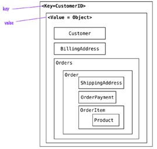
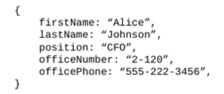
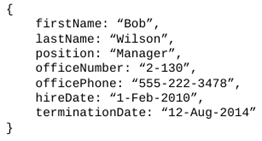
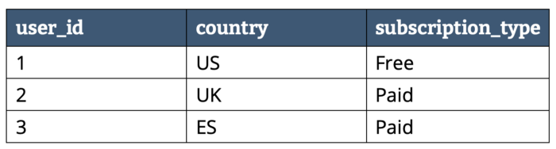
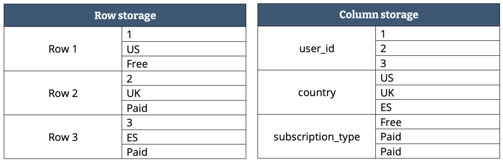
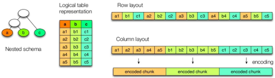
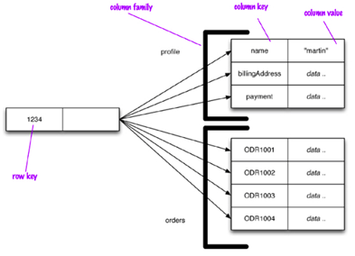
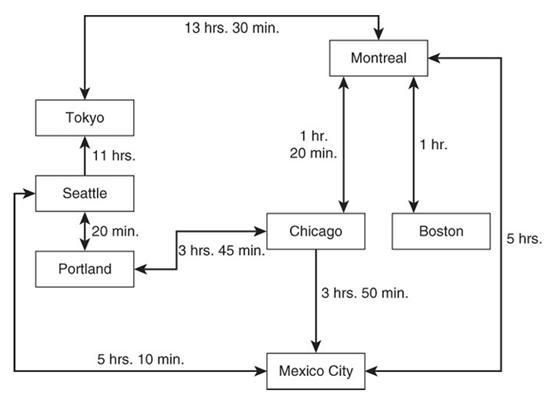
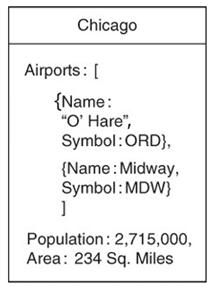
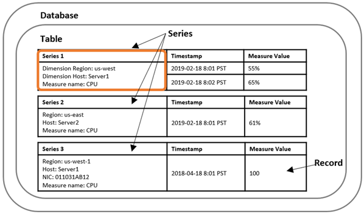

Bases de datos no relacionales
Las bases de datos no relacionales se refieren a menudo como bases de datos NoSQL. El nombre NoSQL es desafortunado, ya que en realidad no se refiere a ninguna tecnología en particular; originalmente fue pensado simplemente como un hashtag pegadizo de Twitter para una reunión sobre bases de datos distribuidas, no relacionales y de código abierto en 2009.
Si definimos NoSQL de manera formal, podemos decir que se trata de una variedad de tecnologías diseñadas para procesar conjuntos de datos de manera rápida y eficiente, enfocándose principalmente en el rendimiento, la fiabilidad y la flexibilidad.
Si nos basamos en el acrónimo, parece indicar cualquier sistema de almacenamiento de datos que no siga un modelo relacional, donde los datos no son relacionales y, por lo tanto, no utilizan SQL como lenguaje de consulta. En realidad, el "No" se refiere a "not only", lo que significa que los sistemas NoSQL se enfocan en ser complementarios a los sistemas de gestión de bases de datos relacionales (SGBD), priorizando la escalabilidad y la disponibilidad en lugar de la atomicidad y la consistencia de los datos.
Existen varias fuerzas impulsoras detrás de la adopción de bases de datos NoSQL, entre ellas:
- Escalabilidad. Conseguir una escalabilidad mayor que las bases de datos relacionales, incluso conjuntos de datos muy grandes o con requisitos de rendimiento de escritura muy altos.
- Costes. Una preferencia generalizada por software libre y de código abierto sobre productos de bases de datos comerciales, lo que implica una reducción en los costes en concepto de licencias.
- Flexibilidad. Permiten superar la restricción de los esquemas relacionales y de esta manera aplicar modelos de datos más dinámicos y expresivos.
- Disponibilidad: Diseñar BD para funcionar en múltiples servidores de bajo coste. Esto permite que cuando uno de estos falle el resto de servidores del clúster puedan continuar dando soporte al servicio.
Hay una gran cantidad de diferentes aplicaciones, las cuales tienen diferentes requisitos, por lo que la mejor opción de tecnología para una situación puede ser muy diferente de la mejor opción para otra. Por lo tanto, parece probable que en el futuro, las BD relacionales sigan utilizándose junto con una amplia variedad de almacenes de datos no relacionales. Esta idea se refiere en ocasiones como persistencia políglota.
Las BD distribuidas NoSQL siguen el modelo transaccional BASE, el cual se centra en la alta disponibilidad.
Tipos de bases de datos NoSQL
Existen varios sistemas de bases de datos NoSQL diferentes debido a las variaciones en la forma en que administran y almacenan los datos sin esquemas. A continuación, explicamos algunos de los tipos más comunes.
Basadas en pares clave-valor
Las BD basadas en pares clave-valor (key-value pair databases) son las BD NoSQL más simples. Están compuestas por 2 componentes: claves y valores.
Las claves son identificadores asociados a los valores de manera análoga a la estructura de datos de un mapa.
Su funcionamiento es similar a tener una tabla relacional con dos columnas, por ejemplo, id y nombre, donde id actúa como clave y nombre como valor. Mientras que en una BD relacional en la columna nombre sólo podemos guardar datos de tipo cadena o numérico, en un almacén clave-valor, el valor puede ser un dato simple o un objeto. En muchos casos, se guarda un objeto binario grande (BLOB). Cuando una aplicación accede utilizando la clave y el valor, se almacena el par de elementos. Si la clave ya existe, el valor se actualiza.
El cliente tiene la capacidad de obtener el valor correspondiente a una clave, asignar un valor a una clave o eliminar una clave del almacén. Debido a que las BD clave-valor permiten prácticamente cualquier tipo de datos en sus valores, es importante que los desarrolladores de software implementen verificaciones en sus programas. Esto es debido a que el sistema no tiene conocimiento del contenido del valor, ya que sólo se pueden consultar los datos a través de la clave, lo cual puede ser una desventaja. Por lo tanto, la aplicación debe ser la encargada de conocer qué se almacena en cada valor.
Debido a que los requisitos exigidos son mínimos, las BD de este tipo pueden tener un rendimiento increíble en una variedad de escenarios, pero por lo general no son útiles cuando se tienen datos o consultas complejas.

Algunas de estas BD son almacenadas en RAM, mientras que otras se almacenan de manera persistente en discos duros.
Casos de uso
Las BD de clave-valor son adecuadas para aplicaciones que tienen lecturas y escrituras pequeñas y frecuentes junto con modelos de datos simples. Los valores almacenados en BD clave-valor pueden ser desde simple valores escalares simples, como números enteros o booleanos, hasta tipos de datos estructurados, como listas y estructuras JSON.
Las BD clave-valor generalmente tienen funciones de consulta simples que les permiten buscar un valor por su clave. Algunas BD de este tipo admiten funciones de búsqueda que brindan algo más de flexibilidad. Generalmente carecen de las capacidades de consulta de otros tipos de BD NoSQL.
Las BD de clave-valor se utilizan en una amplia gama de aplicaciones, como las siguientes:
- Almacenamiento en caché de datos de BD relacionales para mejorar el rendimiento.
- Rastreo de atributos transitorios en una aplicación web, como un carrito de compras.
- Almacenamiento de información de datos de usuario y configuración para aplicaciones móviles.
- Almacenamiento de objetos grandes, como imágenes y archivos de audio.
Ejemplos: Redis, Valkey, Memcached, Amazon DynamoDB, Amazon MemoryDB, Azure CosmosDB.
Basadas en documentos
Las BD basadas en documentos se pueden ver como una extensión de las BD clave-valor. Este tipo de BD almacena los valores como entidades semiestructuradas llamadas documentos, normalmente en un formato estándar como la notación de objetos JavaScript (JSON), o representaciones binarias de este.
El principal beneficio de utilizar una BD de documentos proviene del hecho de que no está limitado a realizar consultas solo por clave, al contrario que las BD clave-valor. Los datos dejan de ser opacos por lo que la BD podrá realizar trabajo adicional sin tener que traducir los datos a un formato que comprenda.
Los documentos se agrupan en colecciones o bases de datos, dependiendo del sistema, lo que permite agrupar documentos.
Los documentos contienen uno o más campos, donde cada campo contiene un valor con un tipo, ya sea cadena, entero, flotante, fecha, binario o array u otro documento.

Una de las características más importantes de las BD de documentos es que no es necesario definir un esquema fijo antes de agregar datos a la BD. Simplemente al agregar un documento a la BD se crean las estructuras de datos subyacentes necesarias para respaldar el documento. La falta de un esquema fijo brinda a los desarrolladores más flexibilidad con las BD de documentos que con las BD relacionales.

Casos de uso
Las BD de documentos están diseñadas para brindar flexibilidad, siendo una buena opción para aplicaciones que requieren la capacidad de almacenar atributos que varían junto con grandes cantidades de datos.
Por ejemplo, para representar productos en una BD relacional, un diseñador puede usar una tabla para atributos comunes y tablas adicionales para cada subtipo de producto para almacenar atributos utilizados solo en el subtipo de producto. Las BD de documentos pueden manejar esta situación de manera más sencilla.
Las BD de documentos proporcionan documentos integrados, que son útiles para desnormalizar. En lugar de almacenar datos en diferentes tablas, los datos que se consultan frecuentemente juntos se almacenan juntos en el mismo documento.
Las BD de documentos mejoran las capacidades de consulta de las BD clave-valor clave con la indexación y la capacidad de filtrar documentos según los atributos del documento.
Las BD de documentos son probablemente las más populares de las bases de datos NoSQL debido a su flexibilidad, rendimiento y facilidad de uso. Estas BD son adecuadas para una variedad de casos de uso, incluidos:
- Soporte de backend para sitios web con grandes volúmenes de lecturas y escrituras.
- Gestión de tipos de datos con atributos variables, como productos.
- Seguimiento de tipos variables de metadatos.
- Aplicaciones que utilizan estructuras de datos JSON.
- Aplicaciones que se benefician de la desnormalización al incorporar estructuras dentro de estructuras.
Ejemplos: MongoDB, CouchDB, Amazon DocumentDB, Amazon DynamoDB, Azure CosmosDB.
Basadas en columna ancha
Las BD basadas en columna ancha son quizás las más complejas de los tipos de bases de datos NoSQL, al menos en términos de las estructuras de bloques básicos. Las bases de datos de familias de columnas comparten algunos términos con las bases de datos relacionales, como filas y columnas, pero existen diferencias importantes entre estas estructuras.
La columna es la unidad básica de almacenamiento en una base de datos de familias de columnas.
Supongamos que tenemos los siguientes datos:

Dependiendo del almacenamiento en filas o columnas tendríamos la siguiente representación:

Cuando hay una gran cantidad de columnas, puede resultar útil agruparlas en colecciones de columnas relacionadas. Por ejemplo, el nombre y los apellidos suelen usarse juntos, y los números de oficina y los números de teléfono de la oficina se necesitan juntos con frecuencia. Estos pueden agruparse en colecciones llamadas familias de columnas.
Al almacenar conjuntamente las familias de columnas se mejora el rendimiento de acceso y permite la codificación/compresión de los datos, reduciendo su tamaño.

Un modelo basado en columnas se representa como una estructura agregada de dos niveles. El primer nivel formado por un almacén clave-valor, siendo la clave el identificador de la fila, y el valor un nuevo mapa con los datos agregados de la fila (familias de columnas). Los valores de este segundo nivel son las columnas. De este modo, podemos acceder a los datos de un fila, o a una determinada columna:

Al igual que otros tipos de BD NoSQL, las BD basadas en columna ancha no requieren un esquema fijo predefinido. Los desarrolladores pueden agregar columnas según sea necesario. Este tipo de BD están diseñadas para filas con muchas columnas. No es inusual que las bases de datos de familias de columnas admitan millones de columnas. El término de columna ancha hace referencia a este elevado número de columnas que puede llegar a tener cada fila.
Casos de uso
Las BD de columna ancha están diseñadas para grandes volúmenes de datos, con un gran rendimiento de lectura y escritura, y alta disponibilidad. Este tipo de BD se ejecutan en clústeres de varios servidores. No se debe utilizar este tipo de BD en situaciones en las que los datos son lo suficientemente pequeños como para ejecutarse en un solo servidor. En este último caso debería considerarse el uso de BD basadas en documentos o de clave-valor.
Las BD de columna ancha son adecuadas para su uso en:
- Aplicaciones que requieren la capacidad de escribir de manera continua en la BD.
- Aplicaciones que están distribuidas geográficamente en varios centros de datos.
- Aplicaciones que pueden tolerar alguna inconsistencia a corto plazo en las réplicas.
- Aplicaciones con campos dinámicos.
- Aplicaciones con potencial para volúmenes de datos realmente grandes, como cientos de terabytes.
Este tipo de BD son usadas en sistemas de Big Data como los siguientes:
- Análisis de seguridad mediante el uso del tráfico de red y el modo de datos de registro.
- Big Science, como la bioinformática, que utiliza datos genéticos y proteómicos.
- Análisis del mercado de valores mediante datos comerciales.
- Aplicaciones a escala web, como la búsqueda.
- Servicios de redes sociales.
Ejemplos: Apache Cassandra, Apache HBase, Riak, Amazon Keyspaces, Azure CosmosDB, Azure Managed Instance for Apache Cassandra.
Basadas en grafos
En lugar de modelar datos mediante columnas y filas, una base de datos de grafos utiliza estructuras llamadas nodos y relaciones. Un nodo es un objeto que tiene un identificador y un conjunto de atributos. Una relación es un vínculo entre dos nodos que contienen atributos sobre esa relación
Existen muchas formas de utilizar bases de datos de grafos. Los nodos pueden representar personas y las relaciones pueden representar sus amistades en redes sociales. Un nodo puede ser una ciudad y una relación entre ciudades puede utilizarse para almacenar información sobre la distancia y el tiempo de viaje entre ciudades.

Tanto los nodos como sus relaciones pueden tener estructuras complejas. Los nodos pueden tener atributos que los describan.

Casos de uso
Las BD de grafos son muy adecuadas en problemas que se prestan a representaciones como redes de entidades conectadas entre sí. Una forma de evaluar la utilidad de una BD de grafos es determinar si las instancias de entidades tienen relaciones con otras instancias de entidades.
Por ejemplo, dos pedidos en una aplicación de comercio electrónico probablemente no tengan conexión entre sí. Es posible que los haya pedido el mismo cliente, pero ese es un atributo compartido, no una conexión.
De manera similar, la configuración y el estado del juego de un jugador tienen poco que ver con las configuraciones de otros jugadores. Entidades como estas se modelan fácilmente con BD de clave-valor, de documentos o relacionales.
En cambio, tenemos ejemplos como las autopistas que conectan ciudades, las proteínas que interactúan con otras proteínas y los empleados que trabajan con otros empleados. En todos estos casos, existe algún tipo de conexión, vínculo o relación directa entre dos instancias de entidades.
Estos tipos de problemas son apropiados para el uso de BD de grafos. Otros ejemplos de este tipo de problemas incluirían:
- Gestión de infraestructura de TI y redes.
- Gestión de identidades y accesos.
- Gestión de procesos empresariales.
- Recomendación de productos y servicios.
- Redes sociales.
En estos ejemplos resulta claro que existe la necesidad de modelar relaciones explícitas entre entidades y de recorrer rápidamente rutas entre entidades.
Ejemplos: Neo4j, Amazon Neptune, Azure CosmosDB.
Basadas en series temporales
Los datos de series temporales son una secuencia de puntos de datos registrados durante un intervalo de tiempo. Este tipo de datos se utiliza para medir eventos que cambian con el tiempo. Algunos ejemplos son los siguientes:
- Precios de las acciones a lo largo del tiempo.
- Mediciones de temperatura a lo largo del tiempo.
- Utilización de la CPU de una máquina virtual a lo largo del tiempo.
Con los datos de series temporales, cada punto de datos consta de una marca de tiempo, uno o más atributos y el evento que cambia con el tiempo. Estos datos se pueden utilizar para obtener información sobre el rendimiento y el estado de una aplicación, detectar anomalías e identificar oportunidades de optimización.
Por ejemplo, los ingenieros de DevOps pueden querer ver datos que midan los cambios en las métricas de rendimiento de la infraestructura. Los fabricantes pueden querer rastrear los datos de los sensores de IoT que miden los cambios en los equipos de una instalación. Los vendedores en línea pueden querer analizar los datos de flujo de clics que capturan cómo un usuario navega por un sitio web a lo largo del tiempo. Debido a que los datos de series temporales se generan a partir de múltiples fuentes en volúmenes extremadamente altos, deben recopilarse de manera rentable casi en tiempo real y, por lo tanto, requieren un almacenamiento eficiente que ayude a organizar y analizar los datos.
Una base de datos contiene 0 o más tablas. Cada tabla contiene 0 o más series temporales. Cada serie temporal consta de una secuencia de registros a lo largo de un intervalo de tiempo determinado con una granularidad especificada. Cada serie temporal se puede describir utilizando sus metadatos o dimensiones, sus datos o medidas y sus marcas de tiempo.

Ejemplos: InfluxDB, Amazon Timestream, Azure Data Explorer.
Amazon DynamoDB
Amazon DynamoDB es un servicio de base de datos NoSQL sin servidor que permite desarrollar aplicaciones modernas a cualquier escala. Al ser una base de datos sin servidor, solo se paga por lo que se usa y DynamoDB escala a cero, no tiene arranques en frío, actualizaciones de versión, periodos de mantenimiento, parches ni tiempo de inactividad debido a tareas de mantenimiento.
DynamoDB ofrece un amplio conjunto de controles de seguridad y estándares de cumplimiento.
Elementos
En DynamoDB se trabaja principalmente con tablas, elementos y atributos. Una tabla es una colección de elementos y cada elemento es una colección de atributos. DynamoDB utiliza claves principales para identificar de forma exclusiva cada uno de los elementos de la tabla e índices secundarios para proporcionar mayor flexibilidad a la hora de realizar consultas. Se pueden utilizar DynamoDB Streams para capturar los eventos de modificación de datos en las tablas de DynamoDB.
Características de DynamoDB
A continuación, se detallan algunas de las características de DynamoDB.
Sin servidor
Con DynamoDB, no se necesita aprovisionar ningún servidor ni aplicar parches, administrar, instalar, mantener ni operar ningún software. DynamoDB proporciona mantenimiento sin ningún tiempo de inactividad. No tiene versiones (principal, secundaria o de parche) y no hay periodos de mantenimiento.
El modo de capacidad bajo demanda de DynamoDB ofrece precios de pago por uso para las solicitudes de lectura y escritura, por lo que solo se paga por lo que se utiliza. Con la característica bajo demanda, DynamoDB escala o reduce verticalmente al instante las tablas para ajustarse a la capacidad y mantiene el rendimiento sin necesidad de administración. También se reduce verticalmente a cero, por lo que no se tiene que pagar por el rendimiento si la tabla no tiene tráfico y no hay arranques en frío.
NoSQL
Como base de datos NoSQL, DynamoDB está diseñada específicamente para ofrecer un mejor rendimiento, escalabilidad, capacidad de administración y flexibilidad en comparación con las bases de datos relacionales tradicionales. Para admitir una amplia variedad de casos de uso, DynamoDB permite modelos de datos de documentos y de clave-valor.
A diferencia de las bases de datos relacionales, DynamoDB no admite el operador JOIN. Se recomienda desnormalizar el modelo de datos para reducir los viajes de ida y vuelta a la base de datos y la potencia de procesamiento necesaria para responder a las consultas. Como base de datos NoSQL, DynamoDB proporciona una sólida coherencia de lectura y transacciones ACID para crear aplicaciones empresariales.
Totalmente administrado
Al ser un servicio de bases de datos totalmente administrado, DynamoDB se ocupa del trabajo pesado e indiferenciado que supone administrar una base de datos. Se encarga de la instalación, las configuraciones, el mantenimiento, la alta disponibilidad, el aprovisionamiento de hardware, la seguridad, las copias de seguridad, la monitorización y mucho más. Esto garantiza que, al crear una tabla de DynamoDB, esté lista al instante para las cargas de trabajo de producción. DynamoDB mejora constantemente su disponibilidad, fiabilidad, rendimiento, seguridad y funcionalidad sin necesidad de actualizaciones ni tiempo de inactividad.
Rendimiento de milisegundos de un solo dígito a cualquier escala
DynamoDB se creó específicamente para mejorar el rendimiento y la escalabilidad de las bases de datos relacionales a fin de ofrecer un rendimiento de milisegundos de un solo dígito a cualquier escala. Para lograr esta escala y rendimiento, DynamoDB está optimizado para cargas de trabajo de alto rendimiento y proporciona una API que fomenta el uso eficiente de las bases de datos. Omite las características que son ineficientes y que no ofrecen rendimiento a gran escala como, por ejemplo, las operaciones JOIN. DynamoDB ofrece un rendimiento constante de milisegundos de un solo dígito para su aplicación, tanto si hay 100 como 100 millones de usuarios.
Casos de uso de DynamoDB
DynamoDB es ideal para casos de uso que requieren un rendimiento uniforme a cualquier escala con una sobrecarga operativa mínima o cero. La siguiente lista incluye algunos casos de uso en los que puede utilizar DynamoDB:
-
Aplicaciones de servicios financieros: supongamos que trabaja en una empresa de servicios financieros que crea aplicaciones para el comercio y el enrutamiento en tiempo real, la administración de préstamos, generación de tokens y libros de transacciones. Con las tablas globales de DynamoDB, sus aplicaciones pueden responder a los eventos y atender el tráfico de las Regiones de AWS de su elección con un rendimiento de lectura y escritura rápido y local. DynamoDB es adecuado para aplicaciones con los requisitos de disponibilidad más estrictos. Elimina la carga operativa que supone el escalado manual de las instancias para aumentar el almacenamiento o el rendimiento, el control de versiones y las licencias. Puede utilizar las transacciones de DynamoDB para lograr atomicidad, coherencia, aislamiento y durabilidad (ACID) en una o más tablas con una sola solicitud. Las transacciones (ACID) se adaptan a las cargas de trabajo que incluyen el procesamiento de transacciones financieras o la gestión de pedidos. DynamoDB se adapta de forma instantánea a sus cargas de trabajo cuando aumentan o disminuyen, lo que le permite escalar su base de datos de forma eficaz para adaptarse a las condiciones del mercado, como los horarios del mercado de valores.
-
Aplicaciones de juegos: se puede usar DynamoDB para todas las partes de las plataformas de juego como, por ejemplo, el estado del juego, los datos de los jugadores, el historial de sesiones y las tablas de clasificación. DynamoDB es ideal para las arquitecturas escalables horizontalmente necesarias en las que se basan los juegos de éxito. Reduce y escala horizontalmente de forma rápida el rendimiento del juego (escala a cero sin un arranque en frío). Esta escalabilidad optimiza la eficiencia de su arquitectura, ya sea para escalarla horizontalmente para los picos de tráfico o para reducirla horizontalmente de nuevo cuando el uso del juego sea bajo.
-
Aplicaciones de streaming: las empresas de medios y entretenimiento utilizan DynamoDB como índice de metadatos para el contenido, los servicios de administración del contenido o para ofrecer estadísticas deportivas casi en tiempo real. También utilizan DynamoDB para ejecutar servicios de listas de control y marcadores de los usuarios y procesar miles de millones de eventos diarios de los clientes para generar recomendaciones. Estos clientes se benefician de la escalabilidad, el rendimiento y la resiliencia de DynamoDB. DynamoDB se adapta a los cambios en la carga de trabajo a medida que aumentan o disminuyen, lo que facilita los casos de uso con contenido multimedia en streaming que pueden tener cualquier nivel de demanda.
Costes
DynamoDB cobra por leer, escribir y almacenar datos en sus tablas, además de cualquier característica opcional que decida habilitar. DynamoDB dispone de dos modos de capacidad con sus respectivas opciones de facturación para procesar lecturas y escrituras en sus tablas: bajo demanda y aprovisionado.
-
Bajo demanda: Amazon DynamoDB bajo demanda es una opción de facturación sin servidor que puede atender millones de solicitudes por segundo sin necesidad de planificar la capacidad. DynamoDB bajo demanda ofrece precios de pago por solicitud para las solicitudes de lectura y escritura. De este modo, únicamente se paga por aquello que se utiliza.
-
Aprovisionado: Al crear una nueva tabla aprovisionada en DynamoDB, se debe especificar su capacidad de rendimiento aprovisionada. Esta es la cantidad de rendimiento de lectura y escritura que puede soportar la tabla. DynamoDB utiliza esta información para asegurarse de que hay suficientes recursos del sistema para satisfacer sus necesidades de rendimiento.
DynamoDB también ofrece una capa gratuita que ofrece 25 GB de almacenamiento. La capa gratuita también incluye 25 unidades de capacidad de escritura aprovisionadas y 25 unidades de capacidad de lectura (WCU, RCU) aprovisionadas, lo que es suficiente para administrar 200 millones de solicitudes al mes.